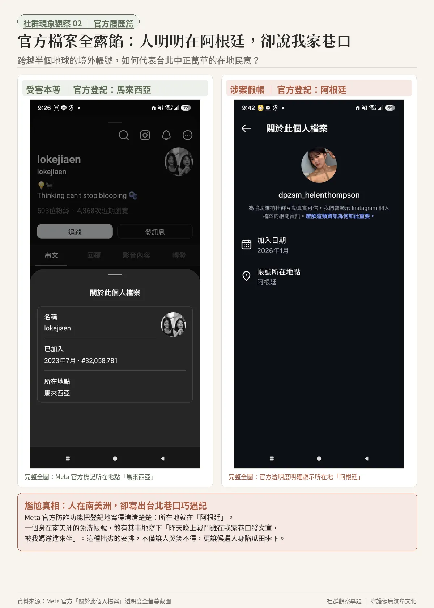
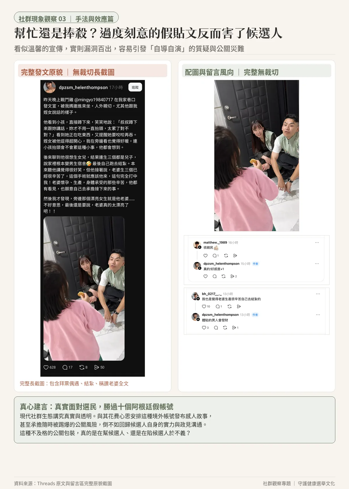
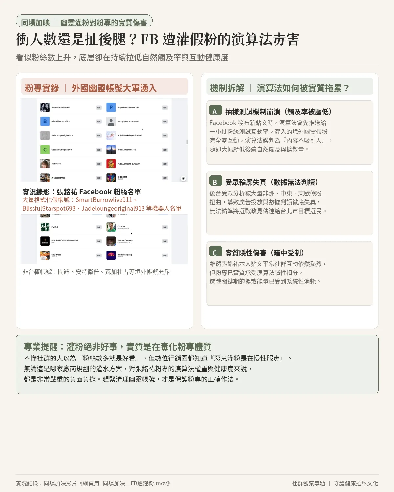

社群操作專題 ｜ 網路生態深度檢視
到底是誰在害銘祐？假帳號跨國盜圖介選、粉專遭灌粉之現象觀察
近期在社群平台 Threads 出現一則自稱台北市民的感人貼文，生動描寫台北市議員候選人張銘祐在巷口發送文宣、蹲下親切與幼童對話，並稱讚其體貼妻子主動結紮等家庭細節。
然而，稍加檢視這則熱門貼文的背後帳號，卻令人替候選人捏一把冷汗：該帳號竟全盤盜用馬來西亞真實女性的生活自拍與日常隨筆，且 Meta 官方透明度資料明確顯示其註冊地點位於阿根廷。
這究竟是哪家不專業團隊規劃的粗糙公關方案、還是有心人在刻意反串捧殺？表面看似在為候選人宣傳，實質上卻破綻百出，留下滿滿容易被對手反咬「造假宣傳」的把柄。
更令人費解的是，候選人官方 Facebook 專頁同期也湧入大量來自非洲、中東的境外機器人灌粉。這種拙劣的灌水手法不僅無法帶來真實支持，更嚴重毒化了粉專演算法的觸及率與長期體質。
本篇專題客觀梳理相關事證，期盼提醒關心台灣選舉的朋友：真實面對選民的汗水，遠勝過十個漏洞百出的阿根廷假帳號。
Visual Analysis
四組客觀比對圖卡速覽
已整理為四張標準社群比例圖卡（1080×1350），供關心公共討論與社群生態的各界朋友自由傳閱下載。











Case 01 ｜ Profile Comparison
實證一：跨海身分盜用——偷取馬來西亞人生活自拍
比對社群照片與文字發布軌跡，涉案帳號的人設完全建立在盜取外國民眾隱私之上。
實證 01-A
頭貼照片跨海盜用：截取外國素人日常自拍偽造身分
真實受害者
@lokejiaen

- 真實身分馬來西亞公民
- 原發布平台Instagram（生活貼文）
- 原貼文時間2024 年 9 月 13 日
- 原貼文描述「sun-kissed 越來越黑」
涉案發文帳號
@dpzsm_helenthompson

- 自稱身分台北在地市民 helen
- 大頭貼來源直接截取受害者同張自拍
- 涉案註冊時間2026 年 8 月剛註冊即換上
- 畫面特徵二次截圖導致邊緣明顯失真
實證 01-B
日常隨筆全盤照抄：將馬來西亞簡體生活碎念改寫成繁體仿冒
受害者日常發文
@lokejiaen

- 原貼文時間10 月 1 日（Threads）
- 原文內容「又是刘海尴尬期又晒黑」
- 語系習慣馬來西亞簡體中文日常記錄
- 延伸發文習慣常態隨筆如「Onward / July」
涉案帳號仿冒串文
@dpzsm_helenthompson

- 抄襲發布時間10 月 7 日（相隔數天後抄襲）
- 抄襲改寫簡轉繁：「瀏海尷尬期..還曬黑好討厭」
- 亦步亦趨抄襲前篇串文照抄寫「Onward / Sept」
- 目的解析俗稱「養號」，營造常人生活感
實證 01-C
個人首頁與簡介露餡：空殼幽靈帳號，自介刻意迎合候選人文案
真實受害者個人首頁
@lokejiaen

- 帳號累積規模294 則貼文、2,770 位追蹤者
- 註冊年份2013 年 5 月（真實生活老帳號）
- 官方登記地馬來西亞（Malaysia）
- 社群互動真實親友常態互動留言
涉案帳號個人首頁
@dpzsm_helenthompson

- 帳號累積規模0 則貼文、0 位追蹤者（空殼號）
- 自介露餡點刻意填寫「蹲下來看 世界比較有趣」
- 呼應宣傳劇本完全對齊候選人「蹲下跟小孩說話」文案
- 官方登記地阿根廷（Argentina）
現象觀察：低階的「養號」手法只會幫倒忙
操作者顯然懂得社群帳號需要先發布幾則日常貼文（俗稱「養號」），營造普通生活感來降低讀者戒心。
然而，執行方式卻粗糙到了極點：連生活照都要跨海去偷馬來西亞素人的照片，連生活碎念也只是把簡體字直接轉成繁體。
在網路查證如此便利的今天，這樣的操作非但無法達到宣傳效果，反而直接把候選人推向輿論質疑的風口浪尖。
然而，執行方式卻粗糙到了極點：連生活照都要跨海去偷馬來西亞素人的照片，連生活碎念也只是把簡體字直接轉成繁體。
在網路查證如此便利的今天，這樣的操作非但無法達到宣傳效果，反而直接把候選人推向輿論質疑的風口浪尖。
Case 02 ｜ Transparency Data
實證二：官方資料全露餡——人明明在阿根廷，卻寫出台北巷口巧遇記
Meta 官方檔案透明度資訊把帳號底細記錄得一清二楚，地理上的荒謬矛盾不言自明。
本尊帳號歷史
lokejiaen

- Threads 加入時間2023 年 7 月（早鳥序號 #32,058,781）
- Instagram 加入時間2013 年 5 月（真實老帳號）
- 官方登記地點馬來西亞（Malaysia）
涉案帳號登記
dpzsm_helenthompson

- Threads 加入時間2026 年 8 月（剛註冊不久，序號破億）
- Instagram 加入時間2026 年 1 月
- 官方登記地點阿根廷（Argentina）
阿根廷與台北巷口的距離
阿根廷與台灣台北市直線距離約一萬九千公里，時差十一小時。
一個官方登記在南美洲阿根廷的剛註冊帳號，卻能活靈活現地寫出：「昨天晚上戰鬥雞在我家巷口發文宣，被我媽邀進來坐」。
關心選戰的人看到這裡，很難不感到無奈：安排這種境外帳號發文，到底是在替候選人助選，還是在替候選人埋設隨時會引爆的地雷？
一個官方登記在南美洲阿根廷的剛註冊帳號，卻能活靈活現地寫出：「昨天晚上戰鬥雞在我家巷口發文宣，被我媽邀進來坐」。
關心選戰的人看到這裡，很難不感到無奈：安排這種境外帳號發文，到底是在替候選人助選，還是在替候選人埋設隨時會引爆的地雷？
Case 03 ｜ Public Relations Impact
實證三：幫忙還是捧殺？過度刻意的假貼文反而害了候選人
為何這則看似溫馨稱讚的貼文，在選戰專業視角下會被視為一場災難性的公關風險？
01
瓜田李下，留下被反咬的致命把柄
涉案帳號破綻太明顯，稍微懂社群的人點開檔案資訊就能查出「阿根廷」與「盜圖」事證。一旦敵對陣營拿去召開記者會踢爆，候選人立刻會被貼上「買假帳號自導自演、造假在地支持」的標籤，跳進黃河也洗不清。
02
適得其反，抹煞真實基層汗水
基層議員候選人每天實地站路口、跑行程、挨家挨戶握手拜票，本是非常踏實的耕耘。但這種假藉「巷口偶遇」的劇本式發文，只會讓選民產生「原來你們都在演」的負面聯想，嚴重傷害候選人的人設與誠信。
03
留言搭腔過於刻意，中間選民尷尬
貼文下方出現多個帳號留下一模一樣的讚美語調（如「好感度+1」、「體貼的男人會發財」），發文者亦積極搭腔。這種不自然的套路對一般網友來說過於刻意，只會引來困惑與反感。

Bonus Case ｜ Algorithm Poisoning
同場加映：誰在對粉專灌粉？大量外國幽靈帳號對演算法的實質毒害
候選人官方 Facebook 專頁近期湧入大量境外幽靈帳號追蹤。外行人以為衝粉絲數是好事，但社群行銷都知道：這是在慢性毒害粉專的演算法健康度。
實況 00:05 - 00:30
追蹤者名單中密集出現來自埃及開羅、安哥拉、布吉納法索瓦加杜古、比利時安特衛普等跨國無效帳號，與台北市選民結構毫無關聯。
實況 00:35 - 01:15
出現大量公式化命名的機器人帳號：如 SmartBurrowlive911、BlissfulStarspot693、Jadeloungeoriginal913，為典型批次註冊的名單。
實況 01:20 - 02:00
滑動畫面顯示境外帳號佔比異常龐大，持續擠滿最新追蹤名單，呈現大規模人工灌注的痕跡。
A
抽樣互動崩潰（觸及率直接被拉低）
Facebook 演算法推送機制是：發表新貼文時，系統先推給一小批粉絲進行互動測試。當這些灌進來的人造幽靈粉完全不點讚、不閱讀、不留言時，系統演算法便會判定這則貼文「連現有粉絲都不想看、品質低劣」，進而直接壓低其後續的自然擴散觸及率。
B
受眾輪廓失真（數據徹底失準）
粉絲專頁後台的人口統計數據被非洲、中東、南美洲等無效帳號嚴重污染。這導致競選團隊在檢視受眾分析、評估選民政見回饋時根本無法獲得真實資訊，廣告演算法的相似受眾（Lookalike）亦會全面失靈。
C
實質隱性傷害（暗中被扣分）
雖然張銘祐本人貼文平常的互動數據依然維持得很不錯，但那是因為真實支持者熱情互動；在底層架構上，粉專的整體演算法健康度已被幽靈假粉持續消耗，無形中限制了貼文向更廣大中間選民自然擴散的能量。
Public Archive
相關涉案帳號與官方檔案連結匯總
所有資料皆於 2026 年 10 月完成本地影像備份與存證，以下列出原始公開連結供對照驗證。
| 身分角色 | 帳號名稱 | 平台 | 官方登記地點 | 原始檔案連結 |
|---|---|---|---|---|
| 涉案發文假帳 | helen (@dpzsm_helenthompson) | Threads | 未公開 | 查看 Threads 檔案 |
| 涉案發文假帳 | helen (@dpzsm_helenthompson) | 阿根廷（Argentina） | 查看 IG 檔案 | |
| 跨國受害本尊 | lokejiaen (@lokejiaen) | Threads | 馬來西亞 | 查看 Threads 檔案 |
| 跨國受害本尊 | lokejiaen (@lokejiaen) | 馬來西亞 | 查看 IG 檔案 | |
| 候選人官方帳號 | 張銘祐 (@mingyo19840717) | Threads | 台灣 | 查看候選人 Threads |
| 候選人官方專頁 | 張銘祐 粉絲專頁（粉絲名單） | 台灣 | 查看候選人 Facebook（粉絲名單） |
留言搭腔現場：五組一搭一唱的刻意唱和實證
涉案帳號發布感人短文後，隨即湧入多個風格一致的帳號留言稱讚，發文作者更逐一以官方宣傳口徑熱烈唱和。這種高度劇本化的一問一答，留下了過於刻意的公關操作痕跡：
分析：網友留言剛發出不久，涉案帳號隨即以發文者身分親自搭腔，主動補上典型選戰宣傳金句「好感度+1」，顯露公式化宣傳操作跡象。
分析：精準扣連原文核心情節「蹲下來跟小孩講話，妳才不用一直抬頭」，留言與作者一搭一唱，重複強化特定人設細節。
分析：呼應文章結尾「旁邊那個漂亮女生就是他老婆⋯⋯真的太漂亮了吧」，作者立即用英文大寫「YES！」附和，營造支持者熱烈共鳴氛圍。
分析：針對「主動結紮體貼妻子」的私領域家庭話題拋磚引玉，作者隨即丟出「體貼的男人會發財」套版祝福，劇本安排痕跡明顯。
分析：多個不同帳號重複針對同一外貌話題進行讚美，作者立刻以目擊證人口吻回覆「本人很美~」，意圖強化現場巧遇的真實感，反而更顯刻意。